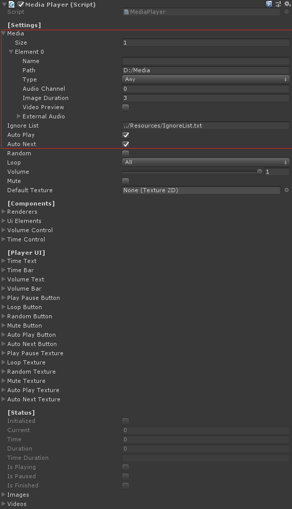
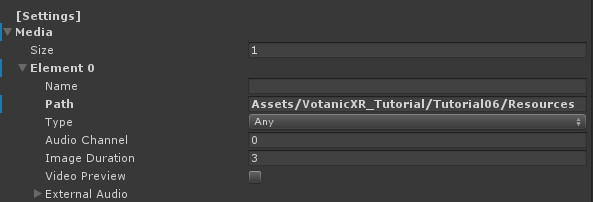
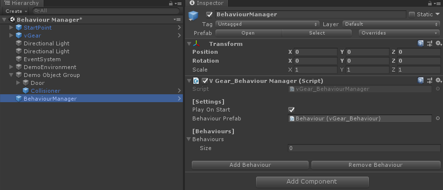

Add Media
In this article
Objective
This chapter introduces the Media Player features provided by VotanicXR. By using the provided media players, media can be easily added into the application.
Built-in Media Player in VotanicXR
It provides two types of media player, includes tranditional media and 360 media.
Set up Media Player Sample Scene
Go to Assets > Votanic > VotanicXR_Tutorial > Tutorial04 and open the scene Media provided.
Media Player
VGear have provided MediaPlayer feature with Virtual Reality environment.
The MediaPlayer is a prefab with a set of ui elements, such as play, pause, next media, volume control.etc.
The media file supported for the MediaPlayer is shown below:
| Audio: | .wav, .ogg, |
| Image: | .jpg, .png, .tga, .exr, |
| Video: | Refer to Unity Video File Compatibility. |
Add Media Player Prefab
To add the Media Player Prefab,
Right-click
vGear > GameObject > MediaPlayer.
Configure Media Player
Go to the component
Media Player (Script)of the child, select theMediain [Settings].The settings are mainly divided to four parts,
[Settings]stores the media setting to be played,[Components]stores the components will be interacted with user,[Player UI]stores the UI elememnts to be displayed, and[Status]stores the status parameters can be called.The important settings for the developer to adjust will be introduced in following steps.

For
[Settings] > Media > Size, set the desired number of the media want to play. For each element below, set the media file path toPath.Here, set the
Sizeto 1 and thePathtoAssets/VotanicXR_Tutorial/Tutorial06/Resources/sample1.mp4.
The result on start is shown as below.
You can also set the whole directory to
Pathto play all the media in the folder and set theTypeto filter the undesired media type.Here, set the
PathtoAssets/VotanicXR_Tutorial/Tutorial06/Resources.
We suggested to use external resources folder with path
../Resources/*and place this media folder next to the build.In addition,
Ignore Listcan be used to filter the undesired media.
Details of the Settings will be described in Detail of MediaPlayers.
360 Media Player
VGear have provided MediaPlayer360 for the 360 degree video and Images.
The MediaPlayer360 is a huge spherical mesh, and apply the 360 media into the mesh to have 360 view.
The media format supported by MediaPlayer360 is shown below.
| Audio: | .wav, .ogg, |
| Image: | .jpg, .png, .tga, .exr, |
| Video: | .mp4, .mov, .avi, .mkv, .asf, .webm |
Add Media Player 360 Prefab
To add the MediaPlayer360 prefab.
Right-click
vGear > GameObject > MediaPlayer360.
Copy the file path of the 360 video
Assets/VotanicXR_Tutorial/Tutorial06/Resources/360.mp4into the[Settings] > Media > Element 0 > Pathfor the result.
The 360 video will be played like the following at the Scene Window.
Additional Configuration in Media Player 360
Most components of the MediaPlayer360 is the same as MediaPlayer,
Settings of [360] about the 360 media will be shown below.
For Stereo 360 video, the StereoType can be changed by API function SetStereoType.
| Stereo 360 video with type DownUp | The video merged for the stereogram | The video mapped into the spherical player |

|
Detail will be described in Detail of MediaPlayers.